What is Bracket-lib
bracket-lib started out life as RLTK - The RogueLike Toolkit. Initially, I needed a code-page 437 terminal library on which to build roguelikes. The Rust Roguelike Tutorial grew, and so did the library. Then Hands-on Rust (my book about learning Rust) was born, and bracket-lib became the primary library behind the book.
Bracket-lib is intended to fulfill the following needs:
- A user-friendly teaching library. If I have to choose between performance and a new-user friendly interface, 99% of the time I'll choose the friendly approach.
- Provide virtual consoles on a variety of platforms, from the web to major Operating Systems.
- Provide a number of extensions to allow you to do layering, sprites, and more advanced rendering---without hurting the overall goal of the library.
- Provide a good "on ramp" for moving onto high-performance libraries once you've mastered the basics.
- Remain agnostic about how you write your game. ECS, tick methods, embedded scripting---take the path you want. Bracket-lib is meant to provide the basic tools you need and let you unleash your imagination.
This "getting started" guide is intended to help you get started with bracket-lib.
Linking to Bracket-lib
The quickest and easiest way to use bracket-lib in your program is to include the entire library in your project. Open your project's Cargo.toml and include:
[dependencies]
bracket-lib = "0.8"
You now have the whole bracket-lib project linked to your program.
Using the Github Version
If you'd like to live on the bleeding edge, you can link to the Github version. In your project's Cargo.toml file, add the following:
[dependencies]
bracket-lib = { git = "https://github.com/amethyst/bracket-lib.git" }
The main reason to do this is to try out new features. The Github version isn't always as stable as I'd like, so proceed with caution.
Hello Terminal
You can get to hello terminal pretty quickly:
Create a New Project
Find the directory in which you want to start developing, and type cargo init my_project to create a new project.
Link Bracket-Lib
Open Cargo.toml in the newly created project, and expand the [dependencies] section as follows:
[dependencies]
bracket-lib = "0.8"
Hello Minimal Terminal
The following code prints "Hello Bracket World" in a new simple console:
use bracket_lib::prelude::*; struct State {} impl GameState for State { fn tick(&mut self, ctx: &mut BTerm) { ctx.print(1, 1, "Hello Bracket World"); } } fn main() -> BError { let context = BTermBuilder::simple80x50() .with_title("Hello Minimal Bracket World") .build()?; let gs: State = State {}; main_loop(context, gs) }
This provides what you need for a minimal start:
- Importing the
preludefrombracket_libmakes the various types and functions available. - You have to create a
Stateobject. This is where your ongoing game state is stored. - Implementing
GameStateprovidesbracket-libwith atickfunction to call on every frame. - Your
mainfunction constructs a terminal---in this case an 80x50 text console. - You create a
Stateobject, even though it doesn't have much state to store. - Launching
main_loophands control over tobracket-lib, and runs thetickfunction on every rendered frame.
Bouncy Hello World
Another example (hello_terminal in the bracket-lib source) provides a bouncing "Hello World". Let's use it to explore some of the features available in the library:
use bracket_lib::prelude::*; struct State { y: i32, going_down: bool, } impl GameState for State { fn tick(&mut self, ctx: &mut BTerm) { let col1 = RGB::named(CYAN); let col2 = RGB::named(YELLOW); let percent: f32 = self.y as f32 / 50.0; let fg = col1.lerp(col2, percent); ctx.cls(); ctx.printer( 40, 49, "#[blue]Hello #[pink]Bracket#[] world.", TextAlign::Center, Some(RGBA::from_u8(200, 200, 200, 255)), ); ctx.print_color( 1, self.y, fg, RGB::named(BLACK), "♫ ♪ Hello Bracket World ☺", ); if self.going_down { self.y += 1; if self.y > 48 { self.going_down = false; } } else { self.y -= 1; if self.y < 2 { self.going_down = true; } } ctx.draw_box(39, 0, 20, 3, RGB::named(WHITE), RGB::named(BLACK)); ctx.printer( 58, 1, &format!("#[pink]FPS: #[]{}", ctx.fps), TextAlign::Right, None, ); ctx.printer( 58, 2, &format!("#[pink]Frame Time: #[]{} ms", ctx.frame_time_ms), TextAlign::Right, None, ); } } fn main() -> BError { let context = BTermBuilder::simple80x50() .with_title("Hello Bracket World") .build()?; let gs: State = State { y: 1, going_down: true, }; register_palette_color("blue", RGB::named(BLUE)); register_palette_color("pink", RGB::named(MAGENTA)); main_loop(context, gs) }
There's quite a lot to unwrap here, so let's go through a quick tour of using bracket-lib.
The State Structure
Everything your program needs to retain during execution lives in your state structure (well, you could use globals and lazy-statics). In this case, we're storing two variables in State:
ystores the current vertical location of the bouncing "Hello Bracket World".going_downstores whether the words are going up or down at the moment. It changes direction at the top and bottom of the screen.
Setup
In the main function, we start by initializing bracket-terminal. We ask for a simple 80x50 console, and title the window. The build() function actually creates the window; the other chained functions return an object describing what you want. There's a lot of options you can choose, documented elsewhere in this guide.
We initialize State with some starting values for the bouncing text. Then we call register_palette_color---more on that in "pretty printing", below. Finally, we call main_loop to begin running the program---and calling tick every frame.
Printing to the Console
- The
tickfunction starts by defining some colors. TheRGB::named(xxx)functions return a color object. The library defines all of the W3C named colors; you can also usefrom_rgbto specify one yourself. These colors are then used in various printing functions. - Then it does a little dance to figure out where to draw the bouncing hello world.
ctx.cls()clears the console.ctx.printeris then used to "pretty print" the words "Hello Bracket World".- The decorators
#[blue],#[pink]specify that text following that marker should be in the color that was registered wih theregister_palette_colorlabel. - The two numbers (40, 49) are screen coordinates.
TextAlign::centerwill center the text horizontally around the specified coordinates.Some(RGBA::from_u8(200, 200, 200, 255))describes a background color for the text.
- The decorators
- Then we use the
print_colorcommands, which is a simpler way to put single-color text on the console. - Some more
printercalls, demonstrating different alignments and color settings.
Notice that in the text, we use unicode. ♫ ♪ Hello Bracket World ☺ is valid, because the characters are part of the codepage-437 set---and bracket-terminal automatically translates them.
You'll find more detailed usage instructions throughout this document.
Using Individual Bracket-Lib Components
bracket-lib is a collection of libraries. You can depend upon them individually, if you only want part of the bracket-lib functionality. The parts are:
bracket-algorithm-traitsdefines some traits that are used in other parts of the program.bracket-colordefines how the library handles color, and includes functions for grayscale, RGB/RGBA/HSV conversion, a lot of named colors, and general color management support.bracket-geometryprovides points, lines, rectangles and circle support.bracket-noiseprovides Perlin, Simplex, White and other noise functions useful for randomly generating things.bracket-pathfindingprovides an A-Star and a Dijkstra mapping solution.bracket-randomprovides an easy-to-use wrapper to a random number generator.bracket-terminalprovides console rendering and support.
When you link directly to a dependency, the namespace is on longer bracket_lib::prelude. Instead, it will be the crate's name, e.g. bracket_random::prelude.
This option is partly provided to help keep development efforts separated, and partly because sometimes you just want a small portion of what the library has to offer---and there's no point in wasting space (and mostly compile time) on the bits you don't need.
Using the Examples
Each of the bracket-lib crates comes with a number of examples. These are a great source of inspiration for how the parts of the library fit together, as well as serving as a demonstration of what can be done.
You can run examples locally by changing directory to the crate you wish to use (e.g. cd bracket-terminal), and then running cargo run --example (name). You can get a list of valid example names by omitting (name).
Many people find they learn better by reading examples, rather than big manuals. If so, this section is for you!
Bracket-Color Examples
All of the bracket-color examples require crossterm for console output. You can run them with:
cd bracket-color
cargo run --example (name) --no-default-features --features crossterm
colors
The colors example demonstrates printing to the console in a number of colors, demonstrating several of the ways in which colors can be generated (named, from floating point and byte RGB).

lerp
The lerp example shows how to use the lerp function, providing smooth transitions between two colors. The transition occurs in the RGB space. You can use HSV colors to lerp in that space if you wish. ("Lerp" is a common shorthand for "Linear Interpolation")
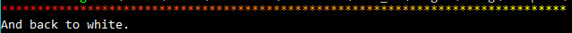
lerpit
Similar to the lerp example, but using an iterator instead of repeated calls to the lerp function. Bracket-color includes an RgbLerp iterator for this purpose.

lerpit_hsv
This is just like the lerpit example, but using an HSV color space for interpolation via the HsvLerp iterator.

named_color
A very simple demo printing colors obtained via RGB::named, including a quick test of the into conversion between colors.

shades_of_grey
This demo shows off how to use to_greyscale() and desaturate() on colors, providing two different methods of converting colors to greyscale.

Bracket-Geometry Examples
bresenham_circle
This demonstrates the use of BresenhamCircle to plot gridded circles, quickly and with compensation for grid locations.
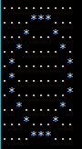
bresenham_line
This example draws a line and plots it on the console, using Bresenham's Line algorithm.
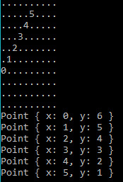
bresenham_sweep
This example sweeps from 0 to 360 degrees, using bracket-geometry angle functions. It then projects a point along that angle, and draws a Bresenham Line to the new point.
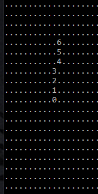
distance
This example calculates the distance between two points using Pythagoras, Pythagoras Squared, Manhattan and Chebyshev distance algorithms.
Given the two points:
Point {
x: 0,
y: 0,
}
Point {
x: 10,
y: 20,
}
Pythagoras Distance: 22.36068
Pythagoras Squared Distance: 500
Manhattan Distance: 30
Chebyshev Distance: 20
vector_line
This example uses vector math to plot a line, rather than Bresenham. It can be slightly faster on some CPUs, if you are plotting enough lines (or long enough lines) for the floating-point math to make a difference. Lines aren't quite as nice as their Bresenham brethren.
..........
.*........
..*.......
..**......
...*......
....*.....
.....*....
.....**...
......*...
.......*..
Bracket-Noise Examples
cellular
Note that this is not cellular automata! Generates cellular noise, basically a randomized Voronoi pattern.
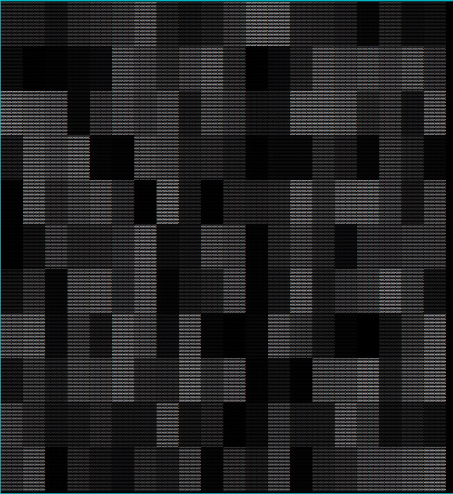
perlin_fractal
This example uses Perlin Fractal Noise to generate an ASCII height map.

simplex_billow_quintic
This examples uses Simplex noise to make a heightmap, using the Billow and Quintic modes.

simplex_fractal
This example uses Simplex noise in Fractal mode to make a heightmap.
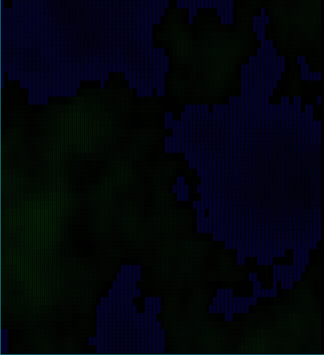
simplex_rigid_hermite
This example uses Simplex noise in Rigit Hermite mode to make a heightmap.
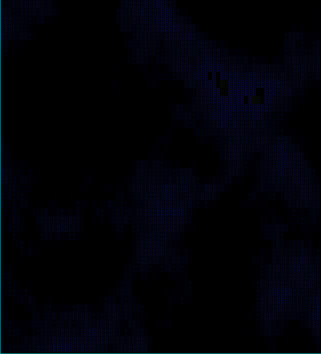
value
This example uses value noise for simple interpolation.
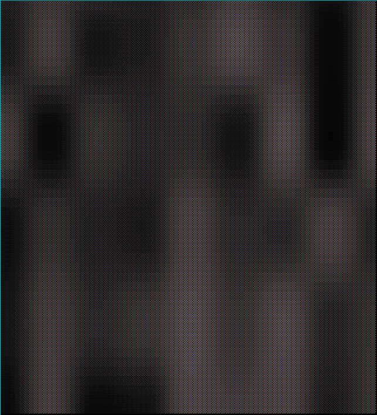
value_fractal
This example uses value noise in fractal interpolation mode.
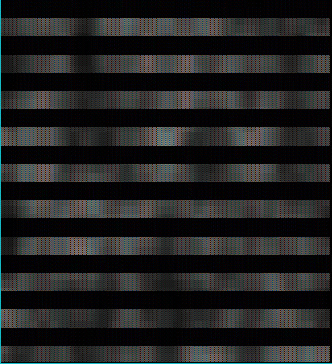
whitenosie
Generates a really random looking field of white noise. Perfect for snow, or for feeding random data to a shader.

Bracket-Pathfinding Examples
astar
A quick demonstration of A-star pathfinding in action. Demonstrates the minimum required for accurate A-star pathing.

astar_manhattan
Demonstrates using Manhattan distances in A-Star, rather than regular Pythagoras.
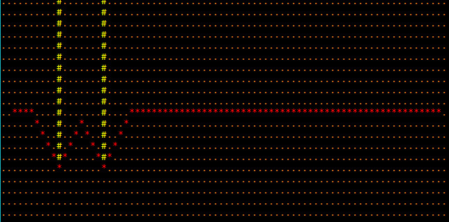
dijkstra
Demonstrates the usage of the Dijkstra maps feature by brightening areas close to starting points, and darkening those further away.
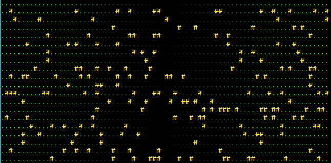
fov
Demonstrates the Field-of-View functionality.
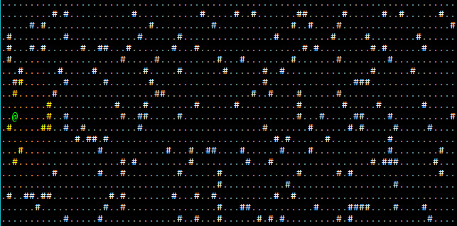
Bracket-Random Examples
diceroll
Demonstrates using the roll_dice functionality of the RNG to roll dice in a familiar, RPG-style. 3d6 is represented as roll_dice(3, 6).
Rolling 3d6, 10 times.
3d6 Roll: 10
3d6 Roll: 8
3d6 Roll: 11
3d6 Roll: 10
3d6 Roll: 14
3d6 Roll: 7
3d6 Roll: 13
3d6 Roll: 9
3d6 Roll: 13
3d6 Roll: 11
Total of rolls: 106
dicestring
Demonstrates using the roll_str functionality to allow you to enter dice types as strings. For example, roll_str("3d6"). Note that this is a lot slower due to parsing requirements.
Rolling 3d6, 10 times.
3d6 Roll: 13
3d6 Roll: 3
3d6 Roll: 11
3d6 Roll: 6
3d6 Roll: 8
3d6 Roll: 12
3d6 Roll: 5
3d6 Roll: 10
3d6 Roll: 12
3d6 Roll: 13
Total of rolls: 93
die_iterator
Creates a dice iterator, each rolling a 6-sided die. Takes 10 dice rolls and prints them.
Rolled 3
Rolled 1
Rolled 3
Rolled 6
Rolled 2
Rolled 4
Rolled 1
Rolled 2
Rolled 1
Rolled 1
distribution
Rolls a lot of dice and plots their relative distribution. This is intended to validate that the random number generator is behaving appropriately.
Rolling 3d6, 200000 times and counting distribution.
03 : ##
04 : #######
05 : ###############
06 : #########################
07 : ######################################
08 : #####################################################
09 : ################################################################
10 : ####################################################################
11 : ######################################################################
12 : #################################################################
13 : #####################################################
14 : ######################################
15 : ##########################
16 : ###############
17 : #######
18 : ##
next
Demonstrates the next_u64 function in the RNG, which passes straight through to the underlying RNG code.
Generating the next 10 u64 numbers
Roll: 18130881974873676332
Roll: 3148465433356529749
Roll: 44531299326498369
Roll: 9665219486649819621
Roll: 10520437451657888625
Roll: 12316016225926642867
Roll: 2116667603649678054
Roll: 11573604930291377796
Roll: 2541210746452578386
Roll: 17238031251593215327
rand
Demonstrates how to use rand to generate a random number of a specified type.
Generating the next 10 f64 numbers
Roll: 0.7195672608676137
Roll: 0.5348780904141426
Roll: 0.8706676996760022
Roll: 0.32794462603290664
Roll: 0.619775940285832
Roll: 0.4395722002981868
Roll: 0.37184757519241163
Roll: 0.9221657800105313
Roll: 0.35612926854806837
Roll: 0.17372920791278967
range
Demonstrates the rng.range(min, max) function.
Generating the next 10 numbers in the range 100 - 200
Roll: 181
Roll: 179
Roll: 199
Roll: 180
Roll: 114
Roll: 117
Roll: 166
Roll: 162
Roll: 196
Roll: 113
slice
Demonstrates using the crate to randomly select an entry from a slice (collection) of entries.
Randomly chose a: Cat
Randomly chose a: Dragon
Randomly chose a: Hamster
Randomly chose a: Dragon
Randomly chose a: Cat
Randomly chose a: Dragon
Randomly chose a: Cat
Randomly chose a: Hamster
Randomly chose a: Cat
Randomly chose a: Cat
slice_index
Demonstrates using slice_index to randomly pull an index entry from a slice of data.
Randomly chose index: 2, which is a Gerbil
Randomly chose index: 0, which is a Cat
Randomly chose index: 0, which is a Cat
Randomly chose index: 1, which is a Dog
Randomly chose index: 0, which is a Cat
Randomly chose index: 2, which is a Gerbil
Randomly chose index: 4, which is a Dragon
Randomly chose index: 4, which is a Dragon
Randomly chose index: 4, which is a Dragon
Randomly chose index: 1, which is a Dog
Terminal Examples
alpha
Demonstrates the RGBA capabilities of the library, when alpha blending is enabled on a sparse console overlaying a simple console. Also uses the VirtualConsole feature to create a large psuedo-console containing a chunk of A Tale of Two Cities, and rendering that as the base layer.

astar_mouse
Generates a random blob map, and places a player on it. The player moves to wherever the mouse is clicked, using A star pathfinding. Also generates real-time field of view for the player as they zip around.

bench_scalable
Generates a completely random console, as fast as possible. Uses the resizable console option to allow the window to be resized while it runs, and queries the console for dimensions---filling as much of it as possible.
No screenshot, sorry.
benchmark
Draws a random console as fast as possible. No resizing.
colorfont
Demonstrates that you can use color in your font graphic if you want to.

dwarfmap
An homage to Dwarf Fortress. Generates a 3D map, and then renders it top-down with darkening for lower than the player z-levels. Implements a-star pathing in 3D, and mouse-based navigation.

flexible
Demonstrates using a fancy/flexible console to make a spinning @ bounce around the screen.

fontswitch
Demonstrates switching fonts at run-time.

hello_minimal
Minimal hello world, see the quick start guide.
hello_terminal
See the quick start guide---a bouncing hello world.

input_harness
A handy tool to display the key code and mouse information about keys/mouse as they are utilized. Also demonstrates the advanced_input system, providing inputs as a stream of events rather than a simple set.

keyboard
Mostly a debugging tool. Demonstrates keys and their various modifier combiantions.
native_gl
Demonstrates how to access the underlying OpenGL system, if you should need it. Note that if you really want to write a GL application, this is a really inefficient way to do it---but it gets you started, and offers a way to perform quick OpenGL calls if you just need something fancy.

no_cls
Mostly a debugging tool, this example shows that consoles accumulate data if you don't call cls. This was important for debugging the native console implementations and their dirty-render detection.
post_process
Demonstrates reading a REX Paint file (.xp), and rendering it to the screen. Enables or disables the terminal's post-processing options, screen-burn and uses scan-lines.

return_error
Demonstrates how to return and act on errors from initialization, should you wish to do so.
rex
Loads Nyan Cat from an embedded REX Paint file, and renders it to the screen.

sparse
Demonstrates layering a sparse console on top of a simple console, with different fonts on each.

sparse_cls
Debugging tool, designed to help me notice when I break clearing sparse consoles again!
sprites
Uses the sprite layer type (in its infancy) to animate some sprites as they run around the screen.

squishy
A benchmark tool that also demonstrates the ability to "squish" terminals by dynamically resizing the size of each tile.
textblock
Demonstrates the text-block tool, and how it can help with large amounts of text.

textsprites
Demonstrates the "multi-tile text sprite" system. You can batch some characters together for quick rendering.

tiles
Uses graphical fonts instead of ASCII/CP437 for a visual dungeon experience.

unicode
Demonstrates that if you really want to (it's slow!), you can load a giant font containing lots of unicode and display multi-lingual terminals. Run this one in release mode. It takes far too long to start, otherwise.

virtual_console
Demonstrates using a virtual console to hold a lot of data, and then displaying windows into the virtual console. This can be handy for logs, manuals and similar. This should have a seizure warning

walking
Demonstrates walking around a map.
walking_with_is_pressed
The same walking demo, but using the is_pressed function (for advanced input) rather than the simple key enum.